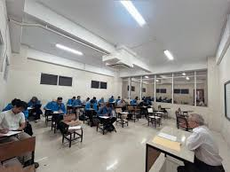

Selamat Datang di Website Pribadi Saya
Cerita tentang aktivitas dan rutinitas sehari-hari saya.
Aktivitas Harian Saya
Pagi hari biasanya saya bangun pukul 04.30. Aktivitas pertama adalah Sholat Shubuh Setelah itu saya mandi dan bersiap-siap untuk mengantarkan adik saya berangkat sekolah kemudian berangkat menuju kampus.
Siang hari saya isi dengan belajar di kampus dan bersilaturahmi bersama teman di kantin. Saya selalu mencoba mengatur waktu dengan baik antara bersilaturahmi dan pengembangan skill baru, seperti membaca buku atau melakukan praktik setelah kelas.
Sore hingga malam adalah waktu untuk bekerja dan bersantai, menghabiskan waktu dengan keluarga dan mengajar serta mempersiapkan rencana untuk hari berikutnya. Kadang saya menonton film atau memasak makanan favorit.
Galeri Foto Aktivitas



Video Kantor Impian
Video Kantor Impian Yang Ingin Saya Miliki
Surah Favorite
Rekaman Surah Al-A'la
Rekaman Oleh Salim Bahanan
Durasi: 2:03 menit.